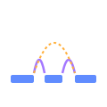

Srivastava Lab tools
Built here at Wistar
Open-source platforms and pipelines developed independently in the lab since September 2023. Every method ships with documented, reproducible code.
BenchDrop-seq
bioRxiv 2026 · benchtop long-read single-cell platform

Bagpiper
Long-read single-cell analysis pipeline
Prior contributions — graduate work (Patro Lab, Stony Brook) & postdoc (Satija Lab, NYGC / NYU)